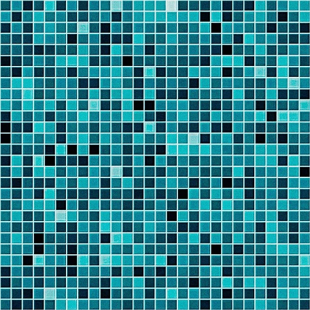

Loading...
WebGL Water
- Draw on the water surface to make ripples
- Drag the background to rotate the camera
- Press SPACEBAR to pause and unpause
- Drag the sphere to move it around
- Press the L key to set the light direction
- Press the G key to toggle gravity
- Raytraced reflections and refractions
- Analytic ambient occlusion
- Heightfield water simulation *
- Soft shadows
- Caustics (see this for details) **
